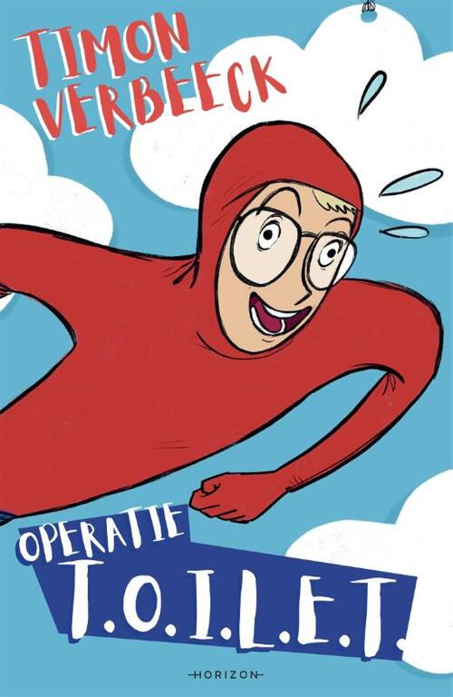

OPERATIE T.O.I.L.E.T.
Timon zit op de WC in de superheldenschool!
Help hem ontsnappen door het doolhof naar Stobbe ❤️ — pas op voor de 3 leerkrachten: Rikkie, Debbie en Frans!
🧻 Bonus: pak WC-rollen op moeilijke plekken voor extra punten.
Druk op SPATIE om te starten